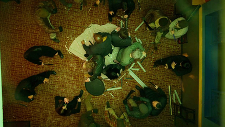

Descripción
Marvel's The Defenders o simplemente The Defenders es una serie de televisión incluida en el Universo cinematográfico de Marvel. Su estreno tuvo lugar el 18 de agosto de 2017 en el servicio de streaming de Netflix. Está basada en la historia del grupo de mismo nombre de Marvel Comics. Se trata de un crossover de 4 personajes de diferentes series distribuidas también por Netflix, en este grupo se incluye a los superhéroes Daredevil, Jessica Jones, Luke Cage y Iron Fist.
Esta serie fue anunciada en 2013, pensando en ampliar el Universo Cinematográfico de Marvel. Durante la Convención Internacional de Cómics de San Diego, se dio a conocer el primer avance de la serie, en el cual se ve la palabra "Defend" (en español "Defender") dentro de la palma de una mano. Esta serie se estrenó el 18 de agosto de 2017 en la plataforma de streaming Netflix.
